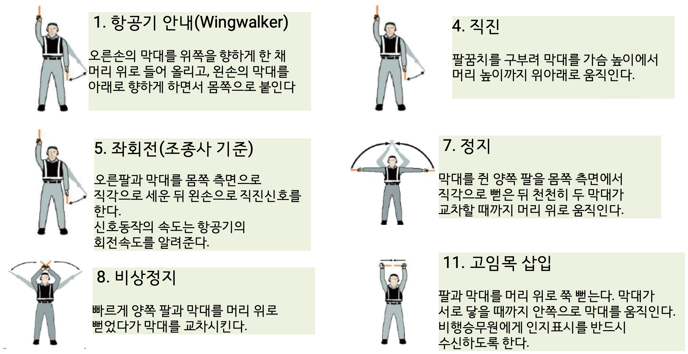
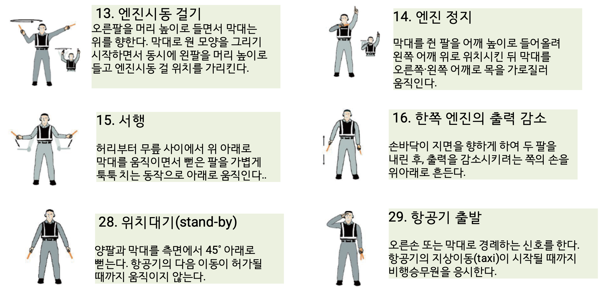

항공 안전 및 지상 조업 교육
정비사는 작업 시간의 대부분을 지상에서 보냅니다. 즉 지상 안전이 곧 전체 안전입니다. 익숙한 작업이라도 항상 위험이 존재함을 인지하고, 사소한 안전 수칙이라도 철저히 숙지·준수하는 것이 정비사의 기본 의무입니다.
- 항공기 주변의 다양한 위험 요소(Hazard)를 식별하고 이해한다.
- 안전한 항공기 정비를 위한 표준 절차(Standard Procedure)를 숙지한다.
- 지상 조업 시 발생할 수 있는 사고를 예방하는 안전 수칙을 습득한다.
1) 작업장 안전 (Shop Safety)
정리정돈의 기본 수칙
- 공구 관리 : 퇴근 시 모든 공구는 분리하여 정해진 위치에 보관합니다.
- 시설 정리 : 사용한 호스와 전기 코드는 꼬임 없이 정리되었는지 확인합니다.
- 청결 유지 : 작업 공간의 이물질(FOD, Foreign Object Damage) 제거는 사고 예방의 핵심입니다.
안전 표시 및 설비
위험 고지
위험 장비 주변에는 눈에 띄는 경고 표지판을 게시합니다.
구급함 위치
비상시 즉각 사용 가능하도록 위치를 명확히 표시합니다.
소방 설비
소화기 등 소방 시설의 위치를 모든 작업자가 숙지해야 합니다.
안전 통로 확보 격납고 바닥의 시각적 가이드라인
- 보행자 인도 : 보행자 전용 통로를 노란색 또는 흰색 페인트(작업장과는 다른 색)로 표시합니다.
- 소방 도로 : 비상 차량 진입을 위해 항상 비워 두어야 하는 소방 도로를 명시합니다.
의사소통과 책임
공동의 책임
안전은 관리자만이 아닌 작업장 내 모든 구성원의 공통된 책임입니다.
적극적 소통
동료의 불안전한 행동을 발견하면 사고 예방을 위해 즉시 조언하고 소통합니다.
위험 보고
잠재적인 위험 요소는 즉시 보고하여 개선될 수 있도록 조치합니다.
2) 개인 보호 장구 (PPE, Personal Protective Equipment)
| 장구 | 용도 |
|---|---|
| Hi-Vis Clothing 고시인성 의복/안전 조끼 | 형광색 바탕에 빛 반사 띠가 부착되어, 작업자의 위치를 쉽게 인지할 수 있도록 돕는 의류. |
| Safety Footwear 안전화 | 무거운 공구·부품이 발에 떨어지거나 날카로운 물체에 찔리는 것을 방지. 발가락 부분에 철판이 들어있고 바닥이 튼튼하게 설계됨. |
| Safety Harnesses 안전대/추락 방지 하네스 | 항공기 동체 위 등 고소(高所)에서 작업할 때 추락 사고 방지. 몸에 착용하고 튼튼한 구조물에 고리를 걸어 고정. |
| Eye Protection 보안경 | 비산물(튀어 오르는 파편), 먼지, 유해 화학 물질로부터 눈을 보호. |
| Gloves 안전장갑 | 날카로운 모서리나 뜨거운 부품을 만질 때 손 피부 보호 및 미끄러짐 방지. |
| Safety Helmets 안전모 | 위에서 떨어지는 물체나 튀어나온 구조물로부터 머리 보호. |
| Hearing Protection 청력 보호구/귀덮개 | 소음이 매우 심한 구역에서 소음성 난청으로부터 청력 보호. |
3) 전기 안전 (Electrical Safety)
전류가 인체에 미치는 영향
화상 위험
전류가 흐르는 부위에 접촉 시 심각한 피부 및 내부 조직 화상.
신경계 손상
전기신호가 신경계에 전달되면 마비 또는 영구적 손상 발생.
심정지 및 사망
강한 전류는 심장 박동을 멈추게 하여 단시간 내 사망에 이를 수 있음.
- 자만심 : "나는 괜찮겠지"라는 생각이 가장 위험.
- 지식 부족 : 전기 설비에 대한 이해 없이 무리하게 작업 수행.
- 부주의 : 기본적인 절연 절차를 무시하고 작업.
전기 화재 예방 수칙
- 전선 꼬임(Kink) 확인 : 전선이 꺾이거나 꼬이면 과열되어 화재 원인이 됨.
- 가연성 물질 제거 : 전기 스파크가 튈 수 있는 곳 주변에 불붙기 쉬운 물건을 두지 않음.
- 정기 점검 : 피복 손상이나 노후된 플러그는 발견 즉시 교체.
4) 고압가스 · 타이어 · 화학물질 취급
고압가스 취급 안전
- 호스 마모 검사 : 압축 공기 호스의 마모 상태를 주기적으로 체크.
- 누설 방지 : 미세한 누설이라도 고압 하에서는 큰 위험이 되므로 철저히 차단.
- 사용 금지 : 절대 먼지 제거용으로 신체에 분사하지 않음.
항공기 타이어 취급
- Tire Cage 사용 : 타이어 팽창 작업 시 반드시 안전망(Cage) 안에서 작업.
- 과팽창 주의 : 규정 압력을 초과하지 않도록 압력계를 수시로 확인.
- 측면 대기 : 타이어 정면보다 측면에서 작업하여 폭발 시 피해 최소화.
MSDS 및 경고 표지
- 용기 표기 : 명칭, 그림 문자, 신호어를 반드시 부착.
- 유해 문구 : 위험성 및 응급처치 요령을 명시해야 함.
5) 공작기계 및 작업 안전
드릴 및 선반 작업 안전
- 보안경 착용 : 회전 시 튀는 칩(Chip)으로부터 눈을 보호.
- 척(Chuck) 주의 : 회전 중인 척을 절대 손으로 잡지 않음.
- 복장 점검 : 헐렁한 옷이나 장신구는 말려 들어갈 위험이 있으므로 금지.
밀링, 연삭 및 용접 안전
- 결함 확인 : 작업 전 밀링커터나 연삭숫돌의 균열 여부를 반드시 점검.
- 화재 예방 : 용접 작업 전 주변 가연성 물질을 제거하고 방화 천 사용.
- 인가자 전용 : 훈련받고 허가된 사람만 용접 및 공작기계를 조작.
연삭: 표면을 부드럽게 다지는 작업
6) 비행대기선(Flight Line) 안전 수칙
① 청력 보호 (귀마개 필수)
- 제트 엔진, 보조동력장치(APU) 주변은 소음이 매우 큼.
- 고소음 지역에서는 반드시 귀마개나 귀 덮개를 착용.
- 한 번 잃은 청력은 다시 돌아오지 않습니다.
② FOD (이물질) 예방 Foreign Object Damage
- FOD는 외부 이물질 때문에 비행기가 망가지는 원인이 됨.
- 아주 작은 쓰레기나 나사못 하나가 제트 엔진을 완전히 파괴할 수 있음.
- 항상 주변을 깨끗하게 청소하고 도구를 잘 관리.
- 램프 및 활주로 지역의 나사못 등은 타이어 손상의 주 원인 → 활주로 청소시간 운영.
③ 엔진과 프로펠러 주변 안전
④ 헬리콥터에 다가갈 때
- 조종사가 나를 볼 수 있도록 앞이나 옆에서 다가감.
- 꼬리 날개(Tail Rotor) 쪽은 안 보이고 너무 빨라 매우 위험 — 절대 피함.
- 바람을 피해 몸을 낮추고 이동.
7) 화재(Fire)와 소화기
불이 나는 이유 — 화재의 3요소
화재의 종류
소화기 종류 — 불에 맞게 사용
| 소화기 | 특징 및 적용 |
|---|---|
| 물 소화기 | 일반 화재(A급)에만 사용. 기름·전기에는 절대 금지! |
| CO₂ 소화기 | 산소를 막아 불을 끔(질식 소화). |
| 할론 소화기 | 기름·전기 화재(B·C급)에 가장 좋음. |
| 분말 소화기 | 불은 잘 끄지만, 가루가 남아 비행기 전자장비가 망가질 수 있음. |
8) 항공기 고정 · 견인 · 유도
비행기 묶어두기 (계류, Mooring/Tie-down)
- 바람에 날아가거나 부서지지 않게 비행기를 단단히 고정.
- 비행기의 기수가 바람이 불어오는 쪽을 향하게 세움.
- 흔들리는 날개 부분도 고정장치로 묶어줌.
시동과 항공기 견인 (Towing)
- 엔진 시동 전, 주변에 빨려 들어갈 이물질이 없는지 확인.
- 시동 시 만약을 대비해 소화기 배치.
- 항공기 견인(Towing) 시 사람 걷는 속도보다 느리게.
- 견인봉이 없는 Towbarless Towing 방식도 사용.
비행기 유도 (Marshalling)
- 조종사가 잘 볼 수 있게 비행기 왼쪽 날개 끝 앞쪽에 위치.
- 직진 : 양팔을 위로 굽혀 앞뒤로 흔들기.
- 정지 : 양팔을 머리 위로 교차(X자).
- 비상정지 : 머리 위로 팔을 빠르게 엇갈려 신호.
- VDGS(Visual Docking Guidance System, 시각주기유도시스템) 활용.


9) 전기지상동력장치 (Electric GPU, Ground Power Unit)
| 종류 | 설명 |
|---|---|
| 견인식 (Towed item) | 동력 생산을 위해 발전기를 돌리는 엔진을 탑재. 비행대기선에서 사용. |
| 고정식 (Stationary item) | 시설에 들어와 있는 전력을 받아 동력 생산. 격납고 내 정비 시 사용. |
| 자체추진식 (Self-propelled item) | 발전기를 구비, 넓은 범위의 출력전압과 주파수(Frequency)를 공급. |
10) 항공기 연료와 급유 (Fueling)
- 기름 종류(가솔린, 제트연료)가 다르면 색깔도 다름.
- 서로 다른 연료를 절대 섞지 않음 — 엔진 고장 발생.
- 오일이나 타이어 공기(질소)를 채울 때도 규격을 꼭 지킴.
- 기름이 호스를 지날 때 정전기가 엄청나게 발생.
- 스파크로 인한 화재를 막으려면 '접지(Grounding)'가 필수.
- 세 곳 — 비행기 · 연료차 · 땅 — 을 전선으로 연결해 전기를 땅으로 흘려보냄.
11) 마무리 — 안전은 기본에서 나옵니다
인적요인의 기초와 역사
인적요인이란 무엇일까요?
인적요인(Human Factors)이란 항공기 사고·준사고·사고방지와 관련된 인간관계 및 인간능력을 총칭하는 것입니다. 피로·자만심·스트레스 등 작업자의 신체적·정신적 상태(인간의 상태)를 의미합니다.
인간의 특성을 이해해야만 치명적인 사고의 고리를 끊어낼 수 있습니다.
정비 오류 사례
- 부품의 부적절한 장착, 부품 누락.
- 필요한 점검을 수행하지 않은 경우.
정비사가 인적요인을 배워야 하는 이유
항공기 정비와 검사에서 인적능력(Human Performance)에 영향을 미치는 요소들을 확인하고 최적화시키기 위함입니다.
대형 사고 방지
사소한 실수를 줄이면 인명 피해로 이어지는 대형 사고를 미리 막을 수 있음.
작업자 부상 감소
불안전한 행동을 교정하고 안전 의식을 높여 정비사 부상을 크게 줄임.
품질 및 효율 향상
정비 품질 향상, 재작업 감소로 정비 시간 단축 등 이점.
항공정비사의 특별한 작업 환경
항공정비사는 일반적인 직장과는 매우 다르고 가혹한 환경에서 업무를 수행합니다. 이러한 환경은 인간의 한계를 시험하며, 평소보다 더 많은 피로와 스트레스가 쌓여 '실수'가 발생하기 쉽습니다.
- 늦은 밤이나 새벽 등 불규칙한 교대 근무.
- 여름의 폭염이나 겨울의 혹한에 노출된 야외.
- 신체적 움직임이 극도로 제한된 좁고 폐쇄된 공간.
- 항공기 운항 스케줄에 대한 압박.
작업만큼 중요한 '기록(문서화)'
- 문서화의 비중 : 실제 부품을 교체·수리하는 시간보다, 작업을 준비하고 기록하는 과정에 더 많은 시간을 할애.
- 안전의 기본 : 모든 정비·점검 내용을 항공기 정비 일지에 꼼꼼하게 남기는 것이 안전을 보장하는 기본 원칙.
- 정보의 전달 : 정확한 기록은 다음 교대자·작업자에게 명확한 상태를 전달하여 오해와 실수를 방지.
종합 과학으로서의 인적요인
인적요인학은 단순히 마음만 연구하는 것이 아니라 여러 분야가 합쳐진 종합 기술입니다. 가장 큰 목표는 '사람'과 '작업 환경'을 최적화하는 것입니다.
심리학 (Psychology)
사람이 어떻게 배우고, 기억하며, 스트레스를 처리하는지 연구.
임상·실험·조직·교육 심리학
공학 (Engineering)
작업자가 쓰기 쉽고 안전한 장비·도구·시스템을 설계.
컴퓨터 과학·인지 과학·안전공학·산업공학
의학 (Medicine)
신체 구조를 이해하고 피로·질병으로부터 작업자 건강을 지킴.
인체측정학·생리 역학
인적요인을 구성하는 학문들
| 학문 | 역할 |
|---|---|
| 임상심리학 (Clinical Psychology) | 작업 현장 안팎의 문제에 초점. 정비사가 개인 스트레스·동료 갈등·심리적 불안감을 극복하고 업무에 집중하도록 도움. |
| 실험심리학 (Experimental Psychology) | 인간의 인지·행동 특성을 과학적으로 증명. 학습·기억·소통 방식을 연구해 작업 절차 개선과 효율 향상. |
| 인체측정학 (Anthropometry) | 사람마다 다른 체형·치수(키·팔 길이·몸무게)를 통계적으로 측정·분석하여 도구와 작업 공간을 설계. 예) 체격이 큰 정비사라도 좁은 비행기 내부·연료 탱크 안에서 안전하게 일할 수 있게 설계. |
| 인지과학 (Cognitive Science) | 외부 정보를 받아들이고(지각) → 뇌에서 처리해 판단하고(인지) → 손을 움직여 행동(운동)하는 일련의 과정을 연구. |
| 의학 (Medicine) | 교대 근무·시차로 인한 생체 리듬 붕괴, 만성 피로 등을 관리하여 육체적 건강 유지. |
인적요인의 역사
① 레오나르도 다빈치 (1487)
'비트루비안 맨'은 인체 측정의 기초. 비행 장치 설계 시 인간의 신체적 한계를 고려 — 신체 크기·한계에 맞춰 비행기를 설계해야 한다는 생각의 출발점.
원(정신·영원)과 사각형(물질·안정) — 인간은 하늘과 땅을 잇는 소우주.
② 길브레스 부부
인간의 오류를 줄이기 위해 의학(수술실)에서 "메스"–"메스" 복명복창 소통법을 개발. 현재 조종사–관제사 사이의 필수 규정으로 이어짐.
③ 라이트 형제
사람이 직접 비행기를 통제하도록 '3축 조종 시스템' 개발. 비행 기계 자체보다 기계를 조종하는 '사람'의 능력을 중요시한 결과.
- 과거엔 조종사에게만 초점 → 지금은 항공정비사의 인적요인이 훨씬 강조됨.
- Boeing이 항공정비 오류 판별법 MEDA (Maintenance Error Decision Aid)를 개발(1988).
- 실제 여러 항공사고의 약 18~29%가 정비사의 실수와 연관.
- 영국항공청(CAA, 2003) 분류 — ① 정비사의 건강·시력·청력·피로·스트레스 등 인적 요인, ② 날씨·온도·습도·소음 등 환경적 요인, ③ 의사소통·작업교대·정비절차 등 절차·조직적 요인.
PEAR 모델과 인적요인 도구
정비 인적요인의 핵심 'PEAR 모델'
People
작업자
Environment
환경
Actions
행동
Resources
자원
① People (작업자)
작업자의 나이·시력·체력 등 개인의 한계를 이해해야 합니다. 피로가 쌓이지 않게 정기적으로 충분히 쉬는 것이 매우 중요합니다.
| 요인 | 세부 항목 |
|---|---|
| 물리적 요인 (Physical) | 신체 크기 · 성별 · 연령 · 힘의 크기 · 감각기관의 한계 |
| 생리학적 요인 (Physiological) | 작업량 · 경험 · 지식 · 교육훈련 · 태도 · 정신 또는 감정상태 |
| 심리적 요인 (Psychological) | 영양상태 · 건강 · 생활양식 · 피로 · 약물 의존도 |
| 사회심리적 요인 (Psychosocial) | 대인관계의 갈등 |
People의 관리
- 청력과 시력을 정기적으로 검사.
- 건강한 몸 상태를 지속적으로 유지.
- 서로 소통하고 돕는 '팀워크' 구축.
② Environment (환경)
물리적 환경
온도·습도·소음·조명 관리.
기후 · 작업위치(내/외부) · 작업공간 · 교대근무 · 조명 · 온랑 · 안전
조직적 환경
기업 문화·지원 및 존중.
개인 · 감시 · 근로 관계 · 압박 · 승무원 구성 · 회사 규모 · 수익성 · 사기 · 기업문화
③ Actions (행동)
정비사가 수행하는 모든 작업 순서와 행동을 분석합니다. 작업 지침서와 점검표(Checklist)를 순서대로 정확히 따르고 있는지 확인합니다.
- 과제 수행 단계 · 활동 순서 · 참여인원 수 · 정보처리 요건.
- 지식요건 · 기량요건 · 태도요건 · 자격요건 · 검사요건.
④ Resources (자원)
작업에 필요한 물건뿐만 아니라 넉넉한 시간과 동료 역시 중요한 자원입니다.
매뉴얼
작업절차·정비매뉴얼
공구/장비
타인·시험장비·공구·고정장치
시간
넉넉한 작업 시간
동료
교육훈련·품질시스템
인적요인의 도구 (1) — MEDA
MEDA 개념의 3원칙
- ① 직원에 대한 신뢰 — 정비사는 항상 최선을 다하며 고의로 실수하지 않는다.
- ② 다양한 요인의 기여 — 오류를 유발하는 요인은 한 가지가 아니다.
- ③ 결함 제어가능성 — 오류 유발요인은 관리될 수 있다.
MEDA 프로세스 5단계
| 단계 | 내용 |
|---|---|
| ① 사건 (Event) | 정비조직이 조사를 실시할 이벤트를 선택. |
| ② 판단 (Decision) | 정비결함과 관련된 사건인가? '예'이면 MEDA 조사 진행. |
| ③ 조사 (Investigation) | 상태·경위·원인, 가능하면 예방정책도 기록. |
| ④ 예방 전략 (Preventive Strategies) | 유사 결함 재발방지를 위한 예방 전략 수립. |
| ⑤ 개선사항 반영 (Feedback) | 변화된 정비시스템을 모든 정비사에게 전파. |
인적요인의 도구 (2) — SHEL
| 요소 | 설명 |
|---|---|
| S (Software) | 항공기 정비 관련 법·규정·절차, 각종 매뉴얼, 작업 카드(Job Card), 점검표(Check List) 및 교육훈련. |
| H (Hardware) | 항공기 정비를 위한 격납고·시설·장비·공구 등의 설계 적절성 및 인체 적합성. |
| E (Environment) | 날씨·기온·조명·습도·온도·소음 등 정비작업 관련 물리적 환경. |
| L (Liveware) | 동료 정비사·조종사·지상 조업자 등 관련된 사람들과의 성격·의사소통·리더십·팀워크 및 대인관계. |
인적요인의 도구 (3) — Swiss Cheese Model
- 잠재적 실패 (Latent Failures) — 인간의 행동·결정의 결과처럼 오랜 세월이 경과되어 드러나는 실패.
- 행동적 실패 (Active Failures) — 결과가 즉각적으로 나타나는 실패.
- 오류관리에서 가장 중요한 것은 수정·관리 가능한 직접적 원인에 초점을 두는 것.
- 오류 회피를 위한 훈련·위험평가·안전점검 등은 복합적으로 실시.
인적 오류(Human Error)란?
규정이나 기대치에서 벗어나 잘못된 결정을 내리거나 행동하는 것. 오류 하나만으론 사고가 나지 않지만, 여러 요인이 겹치면 큰 재앙이 됩니다.
- 의도하지 않은 오류 (Mistake) — 잘하려고 노력했음에도 순간적으로 수치를 잘못 읽거나 상황을 잘못 판단하여 발생. 고의가 아닌 정확성으로부터의 일탈.
예시 : 규정 토크 값 '69'를 '96'으로 잘못 보고 과도하게 조이는 경우. - 의도적인 오류 (위반, Intentional Error) — 알면서도 규정을 무시하는 행동. 절차를 지키지 않는 행동은 위험을 초래.
- 활동적 오류 (Active Error) — 발생하면 눈에 띄는 명백한 사건으로 나타나는 특정 개인의 활동.
- 잠재적 오류 (Latent Error) — 당장 안 보이고 숨어 있다가 특정 상황과 결합해 나중에 사고를 일으킴. 가장 경계해야 할 무서운 오류.
더티 도즌 (The Dirty Dozen)
대다수 사고의 원인이 된 정비오류를 일으키는 12가지 나쁜 요인입니다. 이 12가지를 미리 알고 예방하는 방법을 터득하는 것이 가장 중요합니다.
1. 의사소통의 결여
Lack of Communication
2. 자만심
Complacency
3. 지식의 결여
Lack of Knowledge
4. 주의산만
Distraction
5. 팀워크의 결여
Lack of Teamwork
6. 피로
Fatigue
7. 자원 부족
Lack of Resources
8. 압박감
Pressure
9. 자기주장의 결여
Lack of Assertiveness
10. 스트레스
Stress
11. 인식의 결여
Lack of Awareness
12. 관행
Norms
1의사소통의 결여 Lack of Communication
- 어떤 단계도 생략하지 않고 모든 작업을 마칠 수 있도록 정확하고 완벽한 정보교환이 중요.
- 정비절차의 각 단계는 마치 한 명이 작업한 것처럼 공인된 지침에 따라 실행되어야 함.
- 특히 교대 근무 시 '무엇을 하다 말았는지' 명확히 전달하지 않으면 몹시 위험.
- 한 단계 작업 후 서명하고, 확인검사 완료 후 다음 단계 수행. 인수인계는 문서로.
2자만심 Complacency
- 반복적인 검사 항목을 눈대중으로 넘어가다가 비행 안전을 위협하는 큰 결함을 놓침.
- 작업문서 없이 자의적으로 작업하거나, 작업하지도 않고 작업문서에 서명하는 것은 자만심의 신호.
- 예방 : 처음 검사 항목에서 결함을 찾겠다는 각오 · 의심스러우면 서명 안 하기 · 이중 확인 습관.
3지식의 결여 Lack of Knowledge
기종별 차이 무지
기종마다 고치는 방법·절차가 다름. 예전 방식대로 엉뚱하게 수리하면 사고. 불확실하면 해당 기종 경험자나 제작사 기술고문에게 문의.
매뉴얼 필수 확인
최신자료를 사용하고 절차에 명시된 대로 각 단계를 따라야 함. 정비작업은 반드시 해당 기종의 정비 매뉴얼을 확인하여 수행.
4주의산만 Distraction
- 방해를 받았다가 다시 작업할 때는 누락 방지를 위해 반드시 원래 지점보다 '세 단계 전'으로 돌아가 재점검 시작.
- 단계별로 작성된 절차를 사용하고, 단계별 작업 완료 시마다 서명.
주의산만을 부르는 상황 : 작업 중 누가 말을 걸거나 휴대폰 통화 · 개인의 괴로운 가정환경·재정 문제 · 다른 작업으로 주의 전환.
5팀워크의 결여 Lack of Teamwork
6피로 Fatigue
- 몸과 마음이 지치면 판단력이 극도로 흐려짐.
- 깜빡하거나 순서를 헷갈리는 실수가 평소보다 엄청나게 증가.
- 생체 리듬(서커디안 리듬, Circadian Rhythm)이 가장 떨어지는 야간 근무 때 특별한 주의와 교차 점검 필요.
7자원 부족 Lack of Resources
대충 때우기 금지
올바른 규격의 부품이나 전용 공구가 없어 비슷한 모양의 공구로 임의로 때우려 하면 심각한 기체 손상·오류 발생.
작업을 멈출 수 있는 용기
부품이 없거나 도구가 고장 났다면 즉각 교체·수리. 불완전한 상태라면 작업을 일단 멈출 줄 아는 것이 진정한 프로의 자세.
8압박감 Pressure
9자기주장의 결여 Lack of Assertiveness
위험한 침묵
상사의 눈치가 보여 명백히 틀린 것을 보고도 "안전하지 않다"고 말하지 못하는 수동적 태도.
단호한 의견 제시
문제를 발견하면 단호하게 의견을 말하고 올바른 해결책을 상의해야만 돌이킬 수 없는 대형 사고를 막을 수 있음.
10스트레스 Stress
악영향의 연속
직장 내 갈등뿐 아니라 개인 재정 문제·집안일 등 외부 스트레스 요인이 작업 집중력을 흩트리고 악영향을 줌.
건강한 몸과 마음
규칙적인 식사·운동·충분한 휴식을 통해 건강한 몸과 마음을 유지하는 것이 정비 품질 유지에 매우 중요.
11인식의 결여 Lack of Awareness
- 항상 똑같은 일을 반복하다 보니 무감각해지는 현상.
- 주변의 위험 상황이나 자신이 무엇을 잘못하고 있는지조차 인지하지 못하는 매우 위험한 상태.
- 매번 새로 작업하는 신중한 자세로 "처음처럼"을 유지.
12관행 Norms
작업 카드(Job Card)의 힘
여러분의 꼼꼼한 손끝 하나가 수백 명의 소중한 생명을 지킨다는 사실을 꼭 기억하세요!
항공기 검사 개념과 기법
정비사의 눈과 손이 수백 명의 생명을 지킵니다. 항공기 검사(Inspection)는 감항성(Airworthiness)을 유지하기 위한 가장 핵심적인 작업이며, 모든 정비 행위의 출발점입니다.
- 검사(Inspection)의 정의와 목적을 명확히 이해한다.
- 육안 검사부터 정기 점검, 특별 검사까지 다양한 검사 방식의 특징을 파악한다.
- 현장에서 사용되는 정비 매뉴얼 및 항공기 일지의 종류와 역할을 파악한다.
1) 검사(Inspection)란 무엇인가?
📋 정비학적 정의
비행기의 기체 구조물이나 각종 장착 부품의 상태가 항공 안전 기준에 부합하는지 꼼꼼하게 확인하고 검증하는 핵심 작업입니다.
🩺 건강검진 비유
사람이 병원에서 정기 건강검진을 받으며 질병을 예방하듯, 비행기도 정기적으로 아픈 곳이나 숨은 결함이 없는지 진찰하는 것과 완벽히 같습니다.
검사를 왜 해야 하는가?
결함 조기 발견 — 실패 방지
일정한 규칙이나 절차 없이 대충 검사하게 되면 치명적인 고장이나 결함을 놓치게 됩니다.
대형 사고의 미연 방지
아주 작은 결함이라도 초기에 발견해서 고치면, 비행 중에 일어날 수 있는 대형 사고를 완벽히 막을 수 있습니다.
최상의 감항성 유지
항공기가 언제나 가장 안전하게 비행할 수 있도록 최적의 상태 (Airworthiness)를 지속적으로 유지하는 것이 궁극적인 목표입니다.
2) 가장 기본이 되는 육안 검사 (Visual Inspection)
👁️ 일반 육안 검사 (General Visual Inspection)
비행기 겉면을 넓은 시야로 훑어보며 스크래치, 찍힘, 누유 등 눈에 띄는 뚜렷한 외부 이상이 없는지 전반적으로 확인합니다.
🔍 상세 육안 검사 (Detailed Visual Inspection)
특정 부분을 정해놓고 가까이 다가가 집중적으로 살펴봅니다. 전등, 거울, 돋보기 등을 적극 활용하여 육안으로 찾기 힘든 숨은 결함을 꼼꼼히 찾아냅니다.
3) 언제 검사를 하나요? — 검사 주기
비행기 기종마다, 엔진마다 제조사가 정해놓은 엄격한 수명과 점검 주기가 존재합니다. 시간이 다 된 부품은 고장 나기 전에 미리 새것으로 교체해야 합니다.
비행 시간 Flight Hours
항공기가 실제로 하늘에 떠서 운항한 총 '시간'을 누적 계산하여 엔진 및 주요 부품의 검사 일정을 수립합니다.
비행 횟수 Flight Cycles
항공기가 이륙하고 착륙한 '횟수(사이클)'를 계산합니다. 이착륙 시 동체나 엔진에 가해지는 압력과 피로도를 점검하기 위함입니다.
작동 날짜 Calendar Days
비행 여부나 횟수와 관계없이, 고무 부품이나 윤활유처럼 시간이 지남에 따라 자연적으로 노후화되는 부품의 '날짜'를 확인합니다.
4) 검사 전 준비사항
① 작업장 세팅
- 카울링·점검창 개방 : 비행기의 덮개(카울링)나 점검창을 매뉴얼에 따라 안전하게 열어 내부 구조와 부품이 육안으로 잘 보이게 세팅합니다.
- 청소 : 점검 부위 주변의 오염 물질을 깨끗하게 청소하여 미세한 균열이나 결함을 쉽게 식별할 수 있도록 합니다.
- 누유·이물질 사전 확인 : 본격적인 검사 직전, 혹시 새어 나온 기름(엔진 오일, 유압유 등), 알 수 없는 이물질이 주변에 묻어있지 않은지 먼저 살핍니다.
② 서류 세팅
- 항공일지(Logbook) 사전 열람 : 비행기의 과거 정비 이력, 교체 부품 목록, 비행 중 발생했던 결함 현상 등이 상세히 적힌 항공일지를 사전에 꼼꼼히 읽어봅니다.
- 체크리스트(점검표) 준비 : 정비사의 기억력에만 의존하지 않도록, 검사 시 단 하나의 항목도 빼먹지 않기 위해 반드시 체크리스트를 준비합니다.
- 순서대로 체크 : 체크리스트를 손에 들고 명시된 순서에 따라 하나씩 직접 확인(Check)하며 규정된 절차대로 작업을 수행해야 합니다.
5) 항공기 일지 (Logbook)
비행기의 모든 역사를 담은 '건강 기록부'입니다. 항공사는 이 일지를 작성하고 영구적으로 보관할 법적 의무가 있습니다.
로그북 기록의 3대 원칙
로그북은 법적 증거 자료가 되므로 작성 시 엄격한 기준을 따릅니다.
① 실시간성
정비나 비행이 완료된 즉시 기록해야 합니다.
② 정확성
허위 사실을 기재해서는 안 되며, 정비사의 경우 자신의 자격 번호와 서명을 남겨 책임 소재를 명확히 합니다.
③ 영구성
지워지지 않는 필기구로 작성하며, 수정 시에는 수정액을 사용하지 않고 한 줄을 긋고 수정한 사람의 확인 도장 또는 서명을 합니다.
로그북 기록 내용
- ① 비행 기록 : 비행 일자, 출발/도착지, 비행 시간, 착륙 횟수
- ② 결함 및 조치 : 비행 중 발생한 결함, 그에 대해 정비사가 수행한 정비 조치 내용, 수행 일자, 수행한 정비사 이름 및 도장/서면
- ③ 검사 기록 : 정기 점검(A, B, C, D Check) 수행 여부
- ④ 정비이월 기록 및 조치사항
탑재용 vs 지상비치용 일지
| 구분 | 탑재용 항공일지 ✈️ | 지상비치용 항공일지 🏢 |
|---|---|---|
| 보관 위치 | 비행할 때 항상 기내에 싣는 일지 | 사무실에 안전하게 보관하는 일지 |
| 기록 대상 | 비행기 기체 기록 ① 비행 기록 ② 결함 및 조치 ③ 검사 기록 ④ 정비이월 기록 |
엔진, 프로펠러 |
| 세부 일지 | — | 엔진 일지(Engine Log) : 각 엔진별 가동시간(TSN), 분해정비(Overhaul) 및 주요 부품 교체 이력 프로펠러 일지(Propeller Log) : 프로펠러 사용시간, 수리 및 검사 이력 |
6) 주요 점검 부위
① 동체, 날개와 꼬리 (Fuselage / Wing / Tail)
🦴 뼈대 (구조물)
동체와 날개 뼈대에 금이 가거나 휘어진 곳 확인
✈️ 외피 (겉면)
표면 손상이나 페인트가 심하게 벗겨진 곳, 퇴화(Deterioration), 뒤틀림(Distortion) 점검
⚙️ 장비품
각종 계통의 장착 상태와 정상적인 작동 여부 확인
② 기내 — 조종석 / 객실
- 좌석 및 안전벨트 : 튼튼하게 잘 고정되어 있는지 상태와 안전성(Security) 확인
- 창문 : 깨지거나 금 간 곳(균열)이 없는지 점검
- 조종석 : 계기판, 조종 장치, 배터리 상태 등 꼼꼼히 체크
- 계기류 : 장착 상태, 표기 상태, 그리고 가능할 경우 작동상태
- 비행조종장치와 엔진제어장치 : 장착상태, 작동 상태
③ 엔진 — 가장 중요한 심장
- 배관 및 호스 : 오일이나 연료가 새는 곳은 없는지 확인
- 볼트와 너트 : 규정된 힘(토크)으로 꽉 조여져 있는지 점검
- 엔진 마운트 : 엔진을 지탱하는 부위에 금이 가거나, 엔진과 장착대 사이 헐거운지 확인
- 엔진 내부 : 실린더 압축비, 실린더 내부 상태와 공차 점검, 배기가스온도, 압축기와 터빈 내부 상태, 스크린과 드레인 플러그(Drain Plug)에서 금속입자 등 이물질 존재 여부
- 방진구(Flexible vibration dampener) : 장착 상태 및 퇴화 여부 확인
- 엔진제어(Engine control) : 결함, 작동상태, 안전장치 확인
④ 착륙장치 — 랜딩기어 (Landing Gear)
비행기의 무거운 하중을 버티는 튼튼한 다리입니다.
- 완충장치 : 충격을 흡수하는 작동유가 적당량 들어있는지 확인
- 타이어 & 브레이크 : 찢어지거나 너무 많이 닳지 않았는지
- Wheel : 균열, 결함, 베어링 상태 점검
- 버팀대(Truss), 구성부재(Members) : 마모 상태, 피로, 뒤틀림
- 잠금 기계장치(Retracting & Locking Mechanism) : 작동 상태
- 유압유 배관 및 호스 : 누설 여부
- 전기계통 : 전선의 접촉손상(Chafing)과 스위치의 작동 상태
7) 항공 간행물 — 정비사의 등불
간행물의 종류
- ① 항공관계법령이나 규칙
- ② 감항성 개선 지시(AD, Airworthiness Directives)
- ③ 항공기 설계명세서 (TSDS, Type Certificate Data Sheets)
- ④ 엔진과 장비품 그리고 프로펠러 설계명세서
- ⑤ 제작회사의 정비회보(SB, Service Bulletin), 매뉴얼 등
8) 주요 정비 매뉴얼 종류
① 정비 매뉴얼 (Maintenance Manual, MM)
라인 정비나 기본 점검을 수행할 때 항공기에 장착된 계통, 장비품의 정비를 위해 장탈/착, 점검 등을 수록한 가장 기본적인 정비지침서입니다.
| MM 포함 내용 |
|---|
| ① 전기, 유압, 연료, 조종계통의 개요 |
| ② 윤활 작업 주기, 윤활제 등 사용 유체 |
| ③ 제 계통에 적용할 수 있는 압력, 전기 부하 |
| ④ 제 계통의 기능에 필요한 공차 및 조절 방법 |
| ⑤ 평형(Leveling), 수직부양(Jack-Up), 견인 방법 |
| ⑥ 조종익면의 균형(Balancing) 방법 |
| ⑦ 1차 구조재와 2차 구조재의 식별 |
| ⑧ 비행기의 운영에 필요한 검사 빈도, 한계 |
| ⑨ 적용되는 수리방법 |
| ⑩ X-ray, 초음파탐상검사, 자분탐상검사 검사 기법 |
| ⑪ 특수공구 목록 |
② 오버홀 매뉴얼 (Overhaul Manual, OHM)
장탈 및 완전 분해
부품을 비행기에서 아예 떼어내는 '장탈(Removal)' 작업부터 시작하여, 부품 내부의 가장 작은 단위까지 완전히 분해하는 절차를 명시합니다.
정밀 수리 및 조립
완전히 분해된 상태에서 부품의 마모 상태를 점검하고, 정밀하게 수리한 뒤, 새것과 같은 상태로 다시 조립하는 매우 상세하고 복잡한 방법이 적혀 있습니다.
③ 구조 수리 매뉴얼 (Structural Repair Manual, SRM)
기체 손상 복구
비행기의 뼈대(프레임)나 껍질(외피, Skin)이 충격으로 인해 찌그러지거나 구멍이 났을 때 활용하는 특수 지침서.
강도 복원 지침
단순히 모양만 메우는 것이 아니라, 수리 후에도 해당 부위가 원래 가지고 있던 구조적 강도를 완전히 회복할 수 있도록 공학적 방법을 알려줍니다.
판금 및 복합재 정비
리벳 작업, 판금 절단 규격, 복합재료 패치 부착 등 동체 수리의 핵심 정보가 담겨 있습니다.
④ 부품 도해 목록 (Illustrated Parts Catalog, IPC)
항공기를 구성하는 모든 부품을 시각적인 도해(Illustration)와 함께 목록화한 기술 문서 — "부품 백과사전"
주요 기능
- 부품 식별 : 복잡한 항공기 구조 속에서 특정 부품의 형상과 파트 번호 확인
- 부품 주문 : 교체가 필요한 부품을 제작사에 주문하기 위한 근거 자료
- 조립 및 분해 참조 : 부품들이 어떤 순서와 구조로 결합되어 있는지 시각적으로 파악
IPC 구성 요소
- 도해(Illustration) : 분해 조립도(Exploded View), Index Number로 위치 표시
- Part Number : 부품의 고유 식별 번호
- Nomenclature : 부품의 공식 명칭
- Units Per Assy : 해당 조립체에 들어가는 부품의 개수
- Effectivity : 해당 부품이 적용되는 특정 기체 번호(Serial Number)
⑤ 배선 매뉴얼 (Wiring Diagram Manual, WDM)
항공기에 장착된 모든 전기 시스템의 배선도(Wiring Diagrams)를 수록한 기술 문서입니다.
| 포함 내용 | 현장 활용 |
|---|---|
| 와이어 번호(Wire Numbering) 커넥터 및 단자 정보(핀 번호) 접지점(Ground Points) 회로 보호 장치(CB·퓨즈 위치) |
결함 탐구(Troubleshooting) : 단선·단락 의심 구간 논리적 추적 부품 교체 및 수리 : 규격에 맞는 자재 사용 근거 계통 이해 : 신규 장비 장착 시 기존 계통과의 간섭 여부 확인 |
⑥ 구성품 정비 매뉴얼 (Component Maintenance Manual, CMM)
항공기 기체 전체가 아닌 분리된 상태에서 구성품(발전기, 랜딩 기어 브레이크 어셈블리, 항법 장비 등)의 상세 정비를 위해 제작사가 제공하는 지침서입니다. 주로 공장 정비(Shop Maintenance) 단계에서 활용됩니다.
CMM 주요 구성 요소
- Description and Operation : 구성품의 기능과 작동 원리 설명
- Testing and Fault Isolation : 구성품의 성능 시험 방법 및 결함 원인 탐색
- Disassembly : 부품의 분해 순서와 주의 사항
- Cleaning / Inspection / Repair : 세척 방법, 마모 한계치 검사, 허용된 수리 범위 지침
- Assembly : 부품의 조립 순서 및 절차와 토크 값
- Exploded View (IPC) : 구성품 내부의 아주 작은 볼트나 와셔까지 식별
CMM vs AMM 비교
| 구분 | AMM (Aircraft Maintenance Manual) | CMM (Component Maintenance Manual) |
|---|---|---|
| 작업 위치 | On-Wing (항공기에 장착된 상태) | Off-Wing (항공기에서 분리된 상태) |
| 작업 내용 | 구성품의 장탈착, 기능 점검, 육안 검사 | 구성품의 완전 분해, 내부 부품 수리 및 교체 |
| 비유 | 항공기에서 배터리를 장탈하고 장착하는 방법? | 장탈한 배터리 내부의 전해액을 어떻게 교체하는가? |
9) 감항성 개선 지시서 (Airworthiness Directives, AD)
AD 분류
긴급도에 따른 분류
① 접수 즉시 곧바로 긴급 수행을 요구하는 위급한 것 — AOG
② 일정 기간 내에 수행을 요하는 긴급한 것
반복성에 따른 분류
① 일회 수행으로 종료되는 것
② 일정 주기(시간, 사이클, 기간)로 반복적으로 검사를 수행하는 것
AD 내용 구성
- ① 해당 항공기, 엔진, 프로펠러, 기기의 형식과 일련번호
- ② 수행 시기, 기간, 개요, 수행절차, 수행방법
10) 정비회보 (Service Bulletin, SB)
항공기, 엔진 또는 부품 제작사(OEM)가 발행하는 권고적인 기술지시로, 해당 제품의 안전성 향상, 신뢰성 개선, 성능 증대 또는 수명 연장을 위해 특정 점검, 수정, 부품 교체 등의 내용을 포함합니다.
이행 의무에 따른 SB 종류
| 종류 | 설명 |
|---|---|
| Optional (선택적) | 운영자가 판단하여 이행 여부를 결정할 수 있는 개선사항 |
| Recommended (권고) | 가급적 빠른 시일 내에 수행할 것을 권장하는 사항 |
| Alert SB (긴급) | 안전에 직결된 결함이 발견되어 단기간 내에 이행해야 하는 긴급 회보 |
| Mandatory (강제) | 감항당국이 감항성 개선지시(AD)를 발행하여 법적 강제성을 부여한 경우 |
SB 포함 내용
- ① 발행 목적
- ② 대상 기체, 엔진, 장비품
- ③ 서비스, 조정, 개조 또는 검사, 필요한 부품의 공급원
- ④ 작업 소요 인시수(Manhour) 등
11) 형식증명자료집 (Type Certificate Data Sheets, TSDS)
형식증명자료집에서 얻을 수 있는 정보
- ① 형식증명 항공기에 사용된 모든 엔진의 모델
- ② 최소 연료 등급
- ③ 매니폴드압력, 회전수, 마력 등 엔진 최대연속 정격, 이륙정격
- ④ 프로펠러 제작사, 모델, 사용한계, 프로펠러·엔진의 운용한계 및 제한 사항
- ⑤ 대기속도(Airspeed)
- ⑥ 최대탑재하중 상태에서 무게중심과 그 위치범위 — 감항유별이 수송(T)인 항공기는 날개의 평균공력시위(MAC)의 백분율(%)로 표기
- ⑦ 자중무게중심(Empty weight center of gravity) 범위
- ⑧ 기준점의 위치
- ⑨ 평형정보(Leveling means)
- ⑩ 최대중량(Maximum weight)
- ⑪ 좌석 수와 모멘트, 거리(Arm)
- ⑫ 오일과 연료탑재량
- ⑬ 조종날개면의 움직임
- ⑭ 검사에 필요한 장비
- ⑮ 형식증명을 위한 필요한 추가적 특별한 장비
- ⑯ 필요한 플래카드 자료
12) ATA 체계 — 항공기 계통 분류
글로벌 공통 체계
전 세계 모든 항공사와 제작사가 똑같은 번호 체계를 사용하여 방대한 매뉴얼을 통일성 있게 정리하는 표준 분류법입니다.
일관된 챕터 (예시)
보잉, 에어버스 등 어느 회사 비행기든 매뉴얼의 '24장(ATA 24)'을 펼치면 항상 '전기 계통' 내용이 나오도록 약속되어 있습니다.
효율적인 정보 탐색
이러한 전 세계적인 약속 덕분에 정비사들은 기종이 바뀌더라도 필요한 문서를 빠르고 정확하게 찾아 정비할 수 있습니다.
JASC/ATA 100 Code Listings (주요 항목)
| 번호 | 계통명 | 번호 | 계통명 | 번호 | 계통명 |
|---|---|---|---|---|---|
| 21 | Air Conditioning | 32 | Landing Gear | 72 | Turbine/Turboprop Engine |
| 22 | Auto Flight | 33 | Lights | 73 | Engine Fuel and Control |
| 23 | Communications | 34 | Navigation | 74 | Ignition |
| 24 | Electrical Power | 36 | Pneumatic | 76 | Engine Controls |
| 26 | Fire Protection | 51 | Standard Practices/Structures | 77 | Engine Indicating |
| 27 | Flight Controls | 52 | Doors | 78 | Engine Exhaust |
| 28 | Fuel | 53 | Fuselage | 79 | Engine Oil |
| 29 | Hydraulic Power | 55 | Stabilizers | 80 | Starting |
| 30 | Ice and Rain Protection | 57 | Wings | 85 | Reciprocating Engine |
| 31 | Instruments | 71 | PowerPlant | 28 | Fuel |
13) 검사의 종류
① 매일 하는 검사 — 비행 전/후 점검
✈️ 조종사의 역할
Walk-around (외부 육안 점검) : 비행기 주변을 한 바퀴 빙 돌면서 타이어, 엔진, 조종면 등에 겉보기에 이상이나 손상이 없는지 직접 눈으로 확인합니다. 감항성 관련 증명서 확인과, 항공일지의 정비기록도 검토합니다.
🔧 정비사의 역할
수리 및 보급 (Maintenance & Servicing) : 조종사가 적어둔 고장 내용을 신속하게 고치고, 다음 비행을 위해 연료나 오일을 규정치에 맞게 채워 넣으며 완벽하게 준비합니다.
② 정기 검사 — 연간 검사 / 100시간 주기검사
| 구분 | 연간검사 | 100시간 주기검사 |
|---|---|---|
| 공통점 | 연간검사와 100시간 주기검사의 범위와 요목은 동일하다 | |
| 차이점 | 검사 권한을 위임받은 유자격 항공정비사가 수행 | 항공정비사 면허를 가진 정비사가 수행 |
③ 정기 검사 — 단계적 검사 (Progressive Inspection)
효율적인 스케줄링
비행기를 오랫동안 세워두고 한 번에 다 검사하면 항공사의 경제적 손해가 큽니다. 이를 방지하기 위해 전체 점검 항목을 여러 개로 쪼개어 스케줄에 맞춰 돌아가며 검사합니다.
장점 & 방법
장점 : 검사를 비행이 없는 야간에 완성하고 주간에 비행을 하여 수입을 늘릴 수 있습니다.
방법 : 항공기를 등록한 감항 당국에 신청하여 정비프로그램으로 승인을 받습니다.
④ 연속적 검사 (Continuous Inspection) — 정시점검 "Letter Check"
일상적 검사와 상세검사 모두를 포함하는 정비프로그램을 정시점검 또는 Letter Check라고 부르며 A, B, C, D로 구성됩니다.
⑤ 고도계, 송수신기 검사 (Altimeter and Transponder Inspections)
- 계기비행으로 운항하는 항공기는 기능시험완료일을 포함하여 24개월을 초과하지 않은 고도계와 정압계통을 각각 갖추어야 합니다.
- 항공교통관제와 통신용 송수신기를 장착한 항공기 역시 이전의 24개월 주기검사를 필한 송수신기를 갖추어야 합니다.
- 이 점검 모두는 유자격자에 의해 수행되어야 합니다.
14) 특별 검사 (Special Inspection)
특별 검사 발생 상황 목록
Hard Landing
경(硬)착륙 — 규정치 이상의 강한 충격으로 착지한 경우
Overweight Landing
최대착륙중량을 초과한 상태로 착륙한 경우
Turbulence Air Flight
심각한 난기류(Severe Turbulence)를 통과한 경우
Over G
허용 한계를 초과하는 G 하중이 가해진 경우
Lightning Strike
벼락(낙뢰)을 맞은 경우
Volcanic Ash Exposure
화산재에 노출된 경우
Bird Strike
조류 충돌이 발생한 경우
Hail Strike
우박(Hail)에 맞은 경우
Fire Damage
화재가 발생한 경우
Flood Damage
침수·수몰된 경우
경(硬)착륙 (Hard Landing) 발생 시
- 짐을 너무 많이 싣고 내리거나, 악천후 등으로 땅에 너무 세게 부딪히면 충격으로 인해 착륙 기어와 연결된 비행기의 뼈대가 휠 수 있습니다.
- 비행기 표면(외피)이 충격을 받아 쭈글쭈글하게 우는지(주름) 확인합니다.
- 충격으로 날개 밑이나 동체에서 연료가 새지 않는지 꼼꼼히 검사해야 합니다.
난기류를 심하게 만났을 때 (Severe Turbulence)
구조적 피로 누적
강력하고 심한 돌풍에 비행기가 상하좌우로 심하게 흔들리면 날개와 꼬리 부분의 뼈대에 엄청난 스트레스와 피로가 쌓이게 됩니다.
보이지 않는 손상
외관상으로는 날개가 부러지거나 부서지지 않아 완전히 멀쩡해 보일 수 있으나, 내부는 다를 수 있습니다.
체결부 정밀 점검
보이지 않는 곳의 철판을 이어주는 리벳(Rivet)이나 볼트가 헐거워지거나 충격에 떨어져 나갔는지 반드시 점검해야 합니다.
벼락을 맞았을 때 (Lightning Strike)
금속 표면의 특성
비행기 동체 대부분을 차지하는 금속 표면은 전기가 잘 흘러나가(방전) 비교적 덜 위험하며, 번개가 빠져나간 작은 그을음 자국만 남는 경우가 많습니다.
비금속 부품의 취약성
기수 부분의 레이돔(Radome)이나 안테나 커버 등 유리나 플라스틱, 복합소재로 된 부분은 전기가 흐르지 못합니다.
손상 확인
비금속 부위들은 벼락의 엄청난 열 에너지에 의해 시커멓게 타거나 구멍이 나고 녹아내릴 수 있으므로 매우 주의 깊게 살펴봐야 합니다.
조류 충돌 (Bird Strike) 및 화재 발생 시
🦅 Bird Strike
주로 이착륙 중에 발생하며, 새와 부딪힌 레이돔, 날개 앞전, 또는 엔진 주변이 찌그러지지 않았는지 확인합니다. 특히 내부로 충격이 전해져 안쪽 배관이나 전선이 터지지 않았는지 깊숙이 들여다봐야 합니다.
🔥 화재 발생 시
불이 났던 곳의 금속 구조물은 불은 꺼졌어도 뜨거운 열 때문에 금속 고유의 성질이 변해 원래의 단단함을 잃어버렸을 수 있습니다. 반드시 경도 시험기(Hardness Tester) 같은 특수 장비로 강도를 다시 측정해야 합니다.
침수 / 해상 비행기 (Flood Damage / Seaplane)
- 검사(Inspection) : 항공 안전 기준 부합 여부를 꼼꼼하게 확인·검증하는 핵심 작업. 궁극적 목표는 감항성(Airworthiness) 유지
- 검사 주기 3가지 : 비행 시간(Flight Hours) / 비행 횟수(Flight Cycles) / 작동 날짜(Calendar Days)
- 로그북 3대 원칙 : 실시간성 · 정확성 · 영구성
- 탑재용 일지(기체) vs 지상비치용 일지(엔진·프로펠러)
- AMM(On-Wing) vs CMM(Off-Wing)
- AD = 감항당국이 내리는 법적 강제 명령. 미이행 시 비행 불가
- Letter Check : A(며칠) → B(몇 주) → C/D(격납고 중정비, D는 수명 중 3~6회)
- 고도계 & 송수신기 주기 검사 : 24개월 이내
- 특별 검사 : Hard Landing, Over G, Lightning Strike, Bird Strike 등 비정상 상황 발생 시 숨은 손상(Hidden Damage) 탐색
비파괴 검사 (NDI, Non-Destructive Inspection)
재료나 제품의 원형과 기능을 전혀 변화시키지 않고도 성질, 상태, 내부구조 등을 알아내는 모든 검사. 비행기를 부수지 않고 속을 들여다보는 기술입니다.
1) 비파괴 검사(NDI)란?
빛, 열, 방사선, 음파, 전기, 자기 에너지 등 재료의 물리적 성질을 검사체에 적용하여 에너지의 변화를 측정함으로써 조직 이상이나 결함의 존재를 확인합니다.
비파괴검사로 측정·평가할 수 있는 특성
결함 검사
검사체 내부의 결함(균열·기공·이물질) 검출
구조 · 크기
검사체의 내부 구조, 크기 및 도량 파악
재료 특성
물리적·기계적 특성, 화학적 분석 및 조성, 응력·외력에 따른 반응
2) 비파괴 검사의 종류
| 검사 방법 | 원리 요약 | 주요 특징 |
|---|---|---|
| 육안 검사 (Visual) | 육안·확대경·보어스코프 등 광학 장비로 표면 직접 확인 | 저비용, 즉각 결과, 표면 결함만 탐지 |
| 내시경 (Borescope) | 좁은 틈새로 카메라를 삽입하여 내부 육안 확인 | 엔진 내부 비분해 점검 가능 |
| 침투탐상 (Penetrant Dye) | 침투액 → 세척 → 현상액으로 표면 균열 시각화 | 작은 균열도 탐지, 표면 결함만 |
| 와전류 (Eddy Current) | 교류 코일로 와전류 유도, 임피던스 변화 측정 | 전도성 금속 전용, 숨은 결함 탐지 |
| 초음파 (Ultrasonic) | 초음파 송출 후 에코(Echo) 신호 분석 | 깊은 결함·두께 측정 가능, 인체 무해 |
| 방사선 (X-Ray / Isotope RT) | X선·감마선 투과 후 필름/센서에 밀도 차이 촬영 | 내부 전체 영구 기록, 방사선 안전 필수 |
| 자분탐상 (Magnetic Particle) | 자화 후 자분(철가루) 도포, 누설 자속에 자분 집중 | 강자성체 전용, 빠르고 신뢰성 높음 |
| 음향방출 (Acoustic Emission) | 균열 성장 시 발생하는 응력파를 수동 감지 | 대형 구조물 실시간 모니터링 |
| 형광자분 (Magnaglo) | 형광 코팅 자분 + 자외선(블랙라이트)으로 결함 확인 | 미세 균열 시인성 극대화 |
| 탭 시험 (Tap Testing) | 동전·망치로 두드려 타격음(Dead Sound) 차이 청취 | 복합재 적층 분리 탐지, 간편·신속 |
| 전기 전도율 | 와전류 원리 응용, 금속 고유 전도율 측정 | 합금 식별, 열처리 상태 확인 |
| 열상 검사 (Thermography) | 적외선(IR) 카메라로 온도 분포 시각화 | 수분 침투·층 분리 탐지, 넓은 면적 적합 |
3) 주요 방법별 장단점 비교
| 방법 | 장점 | 단점 |
|---|---|---|
| Visual (BSI 포함) | ·저비용 · 휴대 간편 · 즉각적 결과 · 최소 훈련 · 최소 용품 |
· 표면 결함(Discontinuities)만 탐지 · 일반적으로 큰 결함만 탐지 · 긁힘(Scratches)을 결함으로 오판 |
| Penetrant Dye (침투탐상) | · 휴대 가능 · 저비용 · 매우 작은 결함도 검출 → visual과의 유일한 차이점 · 30분 이내 검사 완료 |
· 표면 결함만 탐지 · 거칠거나 다공성 표면 곤란 · 마감재·실란트 제거 준비 필요 · 높은 청결도 필요 |
| Magnetic Particle (자분탐상) | · 휴대 가능 · 저비용 · 작은 결함도 검출 · 즉각적 결과 · 표면 결함만 탐지 · 중간 정도의 검사 기능 → visual, dye로 못보는 안쪽까지 확인 가능 · 상대적으로 빠름 |
· 거친 표면 불리 · 부품 준비 필요(마감재·실란트 제거) · 강자성 부품에만 적용 · 시험 후 부품 탈자 작업 필요 |
| Eddy Current (와전류) | · 휴대 가능 · 표면·표면 결함 동시 검사 · 즉각적 결과 · 작은 결함도 탐지 · 굵기에도 민감 |
· Probe가 검사 표면에 접근 가능해야 함 · 거친 표면 불리 · 전기 전도성 검사체에만 적용 · 넓은 구역 검사 시간 소요 |
| Ultrasonic (초음파) | · 휴대 가능 · 저비용 · 작은 결함도 검출 · 즉각적 결과 · 검사체 준비 거의 불필요 · 두께 측정 광범위 |
· Probe가 검사 표면에 접근 가능해야 함 · 거친 표면 불리 · 고도의 결함 검출·해석 능력 필요 · 결함의 깊이는 나타나지 않음 |
| X-Ray Radiography | · 표면 및 내부 결함 감지 · 숨겨진 곳도 검사 · 영구적 기록 획득 · 검사체 준비 최소 |
· 방사선 안전 위험 · 고비용 · 느린 프로세스 · 결함의 깊이는 나타나지 않음 |
| Isotope Radiography (동위원소 방사선, 감마선) | · 휴대 가능 · X-ray보다 낮은 비용 · 표면 및 내부 결함 감지 · 영구적 기록 획득 |
· 동위원소 안전 위험 · 방사선 동위원소 취급 관련 법 준수 필요 · 결함의 깊이는 나타나지 않음 |
4) 내시경 검사 Borescope Inspection
근본적으로 육안검사이며, 의료용 위내시경처럼 끝에 초소형 렌즈와 밝은 조명이 달린 길고 유연한 관을 사용합니다. 스파크 플러그 구멍 같은 아주 좁은 틈새로 카메라를 밀어 넣어 외부 모니터로 엔진 내부를 선명하게 확인합니다.
리지드 (Rigid)
딱딱한 직선 형태. 직선 경로가 확보된 좁은 공간에 사용.
플렉시블 (Flexible)
구부러지는 유연한 형태. 곡선 경로나 복잡한 내부 구조 검사.
비디오 (Video)
끝에 CCD 카메라 장착. 고화질 영상으로 기록·저장 가능.
5) 액체 침투 검사 Penetrant Dye Inspection
표면에 눈에 보이지 않는 미세한 균열이 있을 때 주로 사용합니다.
검사 절차 (6단계)
① 전처리 (세척)
표면의 오염물·도료 등을 완전히 제거하여 침투액이 결함 속으로 들어갈 수 있도록 준비.
② 침투 처리
특수한 빨간색 침투액을 표면에 바르고 일정 시간 대기하여 결함 속으로 스며들게 함.
③ 세척 처리
겉면의 침투액을 깨끗하게 닦아내고 결함 내부에 침투액만 남김.
④ 현상 처리
흰색 현상액(Developer)을 뿌리면 결함 속 침투액이 스펀지처럼 배어 올라옴.
⑤ 관찰 (판독)
결함 부위에 빨간 침투액이 배어 나와 균열 형태가 선명하게 시각화됨.
⑥ 후처리 (세척)
검사 완료 후 잔류 현상액·침투액을 제거하여 부품 표면을 복원.
침투탐상의 특징
다양한 재질 적용
알루미늄 같은 금속뿐만 아니라 플라스틱, 유리, 세라믹 등 재질에 거의 상관없이 적용 가능.
뛰어난 휴대성
스프레이 캔 형태로 현장 라인 정비에서도 빠르고 간편하게 검사 가능.
검사의 한계
반드시 표면이 깨끗해야 하며, 표면으로 입구가 열린 균열만 찾을 수 있음. 표면 아래 깊숙이 숨은 결함은 탐지 불가.
6) 와전류 검사 Eddy Current Inspection
코일을 이용하여 도체에 시간적으로 변화하는 자계(교류)를 걸면 도체에 발생한 와전류(소용돌이 전기)가 결함에 의해 변화하는 것을 측정하여 결함을 검출합니다.
작동 원리 (3단계)
A. 1차 자기장 발생
선택된 주파수에서 코일을 통해 흐르는 교류 전류는 코일 주위에 자기장(1차 자기장)을 발생시킨다.
B. 와전류 유도
코일이 전기 전도성 물질에 근접하면 와전류가 물질에 포함된다.
C. 임피던스 변화 측정
전도성 물질의 결함이 와전류 흐름에 영향을 주면, 프로브 코일 임피던스가 변화되어 결함 신호를 읽을 수 있다.
전도성 금속에 적용
알루미늄이나 동체 표면처럼 전기가 통하는 금속에만 사용 가능한 검사 방법.
숨은 결함 탐지
금속 안에 상처가 있으면 전기 흐름이 변형되며, 겉면뿐만 아니라 바로 아래 숨은 상처까지 탐지 가능.
7) 초음파 검사 Ultrasonic Inspection
초음파탐상기는 검사할 항공기 부품의 한쪽 면에서 사람의 귀에 들리지 않는 높은 주파수의 초음파를 쏘아 보냅니다. 재료 내부로 들어간 초음파가 결함(균열·불연속면)에 부딪혀 반사되어 돌아오는 에코(Echo) 신호의 크기와 시간을 분석하여 결함의 크기와 위치를 찾아냅니다. 병원 초음파 기기와 기본 원리가 완전히 동일합니다.
X-선 vs 초음파 비교
| 구분 | X선 (X-Ray) | 초음파 (Ultrasonic) |
|---|---|---|
| 에너지 형태 | 전자기파 (방사선 에너지) | 기계적 파동 (음향 에너지) |
| 전달 매질 | 진공에서도 전파됨 | 공기·액체·고체 등 매질 필요 |
| 투과 원리 | 밀도가 높을수록 흡수·차단 | 밀도가 다른 경계면에서 반사·굴절 |
| 영상화 | 내부 밀도 차이를 평면적 '그림자'로 표현 | 에코로 깊이(심도)와 위치 파악. A·B·C-Scan |
| 안전성 | 전리 방사선, 인체 유해 | 인체 무해, 차폐 시설 불필요 |
| 장점 분야 | 복잡한 내부 구조, 조립 상태 확인 | 두께 측정, 미세 균열·박리 탐지 |
초음파 검사 화면의 종류
"A" 스캔
초음파 신호의 크기(진폭)와 반사 시간(거리)을 1차원 그래프 선 형태로 보여주는 가장 기본적인 화면 패턴.
"B" 스캔
탐촉자가 이동하면서 얻은 데이터를 바탕으로 검사 대상의 내부 단면(Cross-section)을 2차원 이미지로 보여줌.
"C" 스캔
검사 표면을 위에서 내려다본 평면도(Top-view) 형태로, 결함의 면적·분포도를 색상 지도로 제공.
초음파 검사의 3가지 주요 기법
펄스반사법 (Pulse Echo)
한 개의 탐침이 송·수신을 번갈아 수행. 부품 한쪽 면만 접근 가능해도 검사 가능 → 항공기 정비 현장에서 가장 널리 쓰이는 방식.
투과법 (Through Transmission)
부품 양쪽에 송·수신 탐침을 각각 배치. 내부 결함이 있으면 통과 에너지가 감소. 부품 양쪽 면 모두 접근 필요. 미세 결함 탐지에는 다소 덜 민감.
공진법 (Resonance)
주파수를 연속 변화시켜 재료에 공진이 일어나는 주파수를 포착, 두께를 정밀하게 측정. 뒷면 접근이 불가능한 경우에 유용.
탐침(Probe)과 압전효과 Piezoelectric Effect
변환기 탐침(Probe)은 전기적 에너지를 기계적 에너지인 초음파로, 반사된 초음파를 다시 전기 신호로 바꾸어 주는 핵심 역할을 합니다.
압전효과 탐침 내부의 특수 결정체(수정·세라믹 등)에 전압을 걸어주면 결정이 팽창과 수축을 반복하며 초음파 진동을 만들고, 반사파가 돌아오면 다시 전기 신호로 변환됩니다.
접촉 매질 (Couplants)의 필요성
8) 방사선 투과 검사 Radiographic Testing, RT
강력한 방사선(X선 또는 감마선)을 부품에 투과시켜, 반대편 필름이나 센서에 밀도 차이에 따른 음영을 남기는 대표적인 내부(체적) 결함 검사 방법입니다. 병원 X-ray 촬영과 완전히 동일한 원리입니다.
기본 원리 : 투과와 흡수
투과 → 검게 나타남
밀도가 낮은 부분(공기, 결함, 얇은 플라스틱 등)은 X선이 잘 통과하여 필름에 어두운 암영으로 나타남.
흡수 → 밝게 나타남
밀도가 높은 부분(금속, 뼈 등)은 X선을 흡수·차단하여 필름에 밝은 양영으로 나타남.
방사선 검사의 장점
비파괴의 극대화
부품 분해 불필요. 페인트 제거 등 특수 표면 처리 없이 그대로 검사 가능.
영구적인 기록
결과가 필름이라는 실물 사진으로 남아 언제든 재평가 가능.
결함 형태별 위험성 비교
기공 (Porosity) — 둥근 결함
가스가 빠져나가지 못해 내부에 동그랗게 생긴 빈 공간. 힘이 전체로 분산되어 파괴 속도가 비교적 느림.
균열 (Crack) — 뾰족한 결함
날카롭게 찢어진 균열. 끝이 뾰족하여 응력이 한 곳에 극도로 집중 → 순간적으로 파괴. 훨씬 더 위험.
방사선 필름 현상 절차
① 현상 (Development)
방사선에 노출된 잠상(潛像)을 현상액에 담가 검은색 은 입자로 변화.
② 정착 (Fixing)
빛을 받지 않은 부분을 씻어내고 정착액에 넣어 이미지를 고정.
③ 수세 및 건조
잔류 화학약품을 물로 완전히 씻어내고 건조 → 흑백 방사선 사진 완성.
촬영 조건 설정
재료의 물리적 특성 파악
검사 재료의 두께, 재질의 밀도(단단함), 부품의 형상을 먼저 파악해야 적절한 촬영 조건 설정 가능.
노출 시간 및 에너지 조절
재료 특성과 찾고자 하는 결함 종류(기공 vs 균열)에 따라 방사선 강도(에너지)와 노출 시간을 완벽히 계산·세팅해야 선명한 필름 획득.
• 검사 시 방사선 위험 경고 표지판 설치 및 인원 출입 통제 필수
• 촬영 전 방사선 빔 방향 바깥쪽 또는 납 차폐 공간으로 완전히 대피
9) 자분탐상검사 Magnetic Particle Inspection, MPI
자석에 붙는 재질(강자성체)에 자장을 걸어준 상태에서 아주 미세한 쇳가루(자분)를 뿌려 숨어있는 결함을 찾습니다. 결함 부위에서 누설 자속(Leakage flux)이 발생하고, 뿌려진 쇳가루가 이 자기력에 이끌려 결함 윤곽을 눈에 띄게 표시합니다.
자분탐상의 특징 및 한계
검사 대상 제한
알루미늄·티타늄처럼 자석에 붙지 않는 비자성체 부품에는 절대 사용 불가.
강자성체 특화
철, 니켈, 코발트 같은 강자성체 금속 검사에 매우 탁월한 성능.
빠르고 높은 신뢰성
기어, 랜딩기어 부품 등 철강 부품의 표면·바로 아래 숨은 결함을 신뢰성 있게 탐지.
자속 방향의 원리 — 90도의 법칙
자화 방법 : 원형 자화 vs 선형 자화
| 방법 | 원형 자화 (Circular) | 선형 자화 (Longitudinal) |
|---|---|---|
| 방법 | 부품 양끝에 직접 전기를 흘려 자화 | 코일(솔레노이드) 안에 부품을 넣고 전기를 흘려 자화 |
| 자기장 형태 | 전류 방향 축으로 동심원 모양의 둥근 자기장 생성 | 부품 길이 방향을 따라 직선 형태의 자기장 생성 |
| 탐지 결함 | 부품의 길이 방향으로 난 결함 탐지 | 부품의 폭 방향으로 난 결함 탐지 |
자화 방법 : 연속법 vs 잔류법
연속법 (Continuous Method)
전기를 켠 상태(자속 밀도 최대)에서 자분을 뿌려 검사. 자력이 가장 강할 때 검사하므로 표면 아래 깊숙이 숨은 결함을 찾는 데 효과적.
잔류법 (Residual Method)
전기를 먼저 끊고, 부품에 남아있는 잔류 자기(Residual Magnetism)만을 이용하여 자분을 뿌려 검사.
자화 장비
고정식 (Stationary)
작업장에 고정된 대형 장비. 안정적인 DC/AC 전원 사용. 두 헤드 사이에 부품을 고정하고 원형·선형 자화를 모두 수행 가능. 연속법·잔류법 모두 유연하게 적용.
이동식 (Portable, Yoke)
항공기에서 부품을 떼어내지 않고 격납고 현장에서 직접 검사할 때 사용. 랜딩기어 스트러트, 엔진 마운트 핀 등 균열 점검에 유용. 분해·조립 시간 절감.
형광자분검사 Magnaglo
일반 쇳가루 대신 형광 물질이 코팅된 자분을 사용하고 자외선(블랙라이트)을 비추어 결함을 찾는 기법입니다. 미세한 틈새에 형광 액체가 잘 스며들어, 육안으로는 구별하기 힘든 미세 균열도 선명한 초록색/노란색 빛으로 확연히 드러납니다. 복잡한 기어(Gear) 구조나 엔진 부품 검사에 최적.
탈자 (Demagnetizing)의 중요성
올바른 탈자 방법
① 교류 코일 통과
자기장 방향이 1초에 수십 번씩 바뀌는 교류(AC)가 흐르는 코일(솔레노이드) 안으로 자화된 부품을 통과시킴.
② 서서히 멀어지기
코일 안에 가만히 두는 것이 아니라, 코일 중심에서부터 일정한 속도로 천천히 멀어지게 이동.
③ 자력 소멸 (Zero)
거리가 멀어짐에 따라 자기장이 계속 방향을 바꾸며 힘이 점차 줄어들어 결국 자력 = 0이 됨.
10) 접합구조물 (Bonded Structure) 검사
현대 항공기에는 무게를 줄이고 강도를 높이기 위해 허니콤(Honeycomb)이나 탄소섬유 복합재 등 여러 재료를 층층이 접착한 접합구조물이 사용됩니다.
접합구조물의 주요 결함
분리 및 공동 (Delamination & Voids)
충격·노후화로 외피와 내부 접착제 사이가 떨어져 틈이 벌어지는 분리(Delamination). 제조 시 기포가 들어가거나 접착제가 불완전하게 채워지는 공동(Voids).
수분 침투 (Moisture Ingress)
비행 중 극심한 온도 변화와 기압 차이로 외피 균열을 통해 내부 허니콤 구조 속으로 수분 침투. 고고도에서 얼어붙으며 부피가 팽창하여 내부 구조를 파괴.
검사의 어려움
- 상면(Top Skin) 원자재와 두께가 다양
- 접착제의 종류와 두께가 다름
- 코어의 재료·셀 크기·두께·접착제 등 내부 구조 변수가 많음
- 접합 구조의 상면과 하면에만 접근 가능 — 초음파 신호가 일정하게 투과하지 않아 탐지 어려움
11) 복합재료 (Composite) 검사
탄소 섬유·유리 섬유 등 두 가지 이상의 재료를 층층이 겹쳐 만든 복합재료는 금속보다 가볍고 단단하여 최신 항공기 기체에 널리 쓰입니다. 금속의 균열(Crack)과는 달리 적층 분리(Delamination)와 접착 이완이 주요 결함입니다.
탭 시험 (Tap Testing / 동전 시험)
정상 부위
내부가 단단히 붙어있는 멀쩡한 곳은 맑고 경쾌한 금속성 소리가 납니다.
결함 부위
적층 분리나 결함이 있는 곳은 소리가 흡수되어 둔탁하고 먹먹한 무음(Dead Sound)이 납니다.
동전이나 2온스의 가벼운 특수 망치(Tap Hammer)로 겉면을 톡톡 두드려 소리를 청취. 매우 고전적이지만 여전히 현장에서 가장 빠르고 효과적인 방법입니다.
전기적 전도율 검사
탄소/유리 섬유 복합재료 자체는 전기가 통하지 않는 부도체입니다. 낙뢰 시 안전을 위해 표면이나 층 사이에 알루미늄·동(구리) 메쉬 망을 덮어씌웁니다. 복합재료를 수리(Patch)한 후에는 이 전도 물질이 기체 전체와 잘 연결되어 있는지 저항측정기(Bonding Meter)로 꼼꼼히 점검해야 합니다.
열상 검사 (Thermography)
가열 등(Heat Lamp)이나 전기 담요로 부품 표면에 일정한 열을 가한 뒤, 적외선(IR) 카메라로 표면의 미세한 온도 변화를 촬영합니다. 결함이 없는 정상 부위는 열이 고르게 전달되지만, 수분이 침투하거나 층이 분리된 결함 부위는 열전도율이 달라져 뚜렷한 온도 차이(색상 차이)로 나타납니다.
12) 용접 검사의 기초
고열로 금속을 녹여 붙이는 용접 부위의 품질을 외관 표면을 직접 살펴 1차적으로 판단합니다. 잘 용접된 부위는 두 철판이 완벽히 하나가 되어 원래 금속(모재)보다도 훨씬 튼튼해집니다. 이때 쇳물이 철판 안쪽으로 얼마나 깊게 녹아 들어갔는지(용입, Penetration)가 튼튼함의 핵심입니다.
치명적인 용접 결함들
균열 (Crack)
급격한 온도 변화·수축으로 용접 부위 자체나 열영향부(HAZ)가 날카롭게 갈라지는 현상. 용접 부위의 강도를 가장 치명적으로 떨어뜨리는, 절대 허용 불가 결함.
언더컷 (Under Cut)
용접 전류가 너무 세거나 속도가 부적절할 때 모재 부위가 열에 지나치게 녹아 오목하게 도랑처럼 패이는 결함. 두께가 얇아진 것과 같아 그 부분에 응력이 집중.
- NDI 정의 : 원형·기능 변화 없이 결함을 찾는 모든 검사. 에너지(빛·열·방사선·음파·전기·자기) 적용 후 변화량 측정
- 자격 요건 : NDI는 전문 자격증(인증) 취득자만 수행·판정 가능
- 침투탐상 : 표면 결함만 탐지 / 전처리(세척) → 침투 → 세척 → 현상 → 관찰 → 후처리 6단계 / 비자성체·복합재에도 적용 가능
- 와전류 : 전도성 금속 전용 / 표면 아래 숨은 결함 탐지 / 임피던스 변화 측정
- 초음파 3기법 : 펄스반사법(한쪽 면만 접근, 현장 최다 사용) / 투과법(양쪽 접근 필요) / 공진법(두께 측정)
- 방사선 : 밀도 낮음 → 검게(암영) / 밀도 높음 → 밝게(양영) / 영구 기록 가능 / 기공보다 균열이 더 위험
- 자분탐상(MPI) : 강자성체 전용(Al·Ti 불가) / 90도 법칙(자력선 ⊥ 결함) / 원형자화(길이방향 결함) vs 선형자화(폭방향 결함) / 검사 후 반드시 탈자
- 탈자 방법 : AC 코일 통과 후 서서히 멀어지기 → 자력 = 0
- 탭 시험 : 복합재 적층 분리 탐지 / 정상 = 경쾌한 소리, 결함 = Dead Sound
- 열상 검사 : IR 카메라로 온도 분포 시각화 → 수분 침투·층 분리 탐지
2026년도 1학기 기말고사
범위 : 8.1~8.4 · 9.1~9.8 · 10.1~10.12 · 11.1~11.7
| 등급 | 종류 |
|---|---|
| A급 | 일반 가연물 (나무·종이) |
| B급 | 유류·가스 화재 |
| C급 ✅ | 전기 화재 |
| D급 | 가연성 금속 화재 |
Annex 1 : 항공종사자 자격 · Annex 8 : 항공기 감항성 · Annex 17 : 항공보안
| 유형 | 설명 |
|---|---|
| Mistakes | 잘못된 판단·계획으로 인한 실수 |
| Violations | 알면서도 규정을 의도적으로 어기는 위반 |
| Slips | 올바른 의도였으나 동작이 빗나감 |
| Lapses ✅ | 기억 실패로 인한 오류 — 토크값을 잊거나 순서를 빠뜨림 |
| 매뉴얼 | 내용 |
|---|---|
| AMM | 장탈착·점검 등 기본 정비 절차 |
| IPC ✅ | 부품 위치·부품번호(P/N) 수록 |
| SRM | 항공기 구조 수리 절차 |
| TSM | 결함 원인 분석 및 해결 절차 |
② 검사주기가 지나기 전에 미리 일정을 잡아 수행해야 합니다.
③ 경험이 많아도 반드시 매뉴얼과 절차에 따라 수행해야 합니다 (경험 의존 = 자만심, Complacency).
④ 올바른 설명 ✅
② 자분탐상검사(MT)의 올바른 설명 ✅
③ 액체침투검사(PT)는 최신 항공기에서도 여전히 널리 사용됩니다.
④ 자분탐상은 강자성체 금속에만 적용 — 복합재료에는 사용 불가.
| 구분 | 양극산화처리 (Anodizing) | 알로다이징 (Alodizing) |
|---|---|---|
| 처리 원리 | 전기화학적 처리 — 금속을 양극(+)으로 하여 전류를 흘려 표면을 인위적으로 산화시킴 | 화학적 처리 — 크로메이트 용액에 담그거나 도포하여 화학 피막 형성 (전기 불필요) |
| 생성 피막 | 치밀하고 단단한 산화알루미늄(Al₂O₃) 산화막 | 얇은 크로메이트 화성 피막(Chromate film) |
| 주 목적 | 내식성 + 내마모성·경도 향상, 도장 밀착성 | 내식성 향상 + 페인트(도장) 접착성 개선 |
| 전기 전도성 | 산화막이 절연성 (전기 안 통함) | 피막이 얇아 전기 전도성 유지 → 본딩(접지)면에 적합 |
| 특징 | 처리 시간이 길고 설비 필요, 피막이 두껍고 견고 | 간단·신속하며 현장 보수(손상부 부분 처리)에 용이 |
| 번호 | 정답 | 번호 | 정답 | 번호 | 정답 | 번호 | 정답 | 번호 | 정답 |
|---|---|---|---|---|---|---|---|---|---|
| 1 | ③ | 2 | ① | 3 | ① | 4 | ④ | 5 | ② |
| 6 | ③ | 7 | ① | 8 | ③ | 9 | ④ | 10 | ④ |
| 11 | ④ | 12 | ③ | 13 | ③ | 14 | ② | 15 | ④ |
| 16 | ① | 17 | ② | 18 | ② | 19 | ① | 20 | ④ |
| 21 | ④ | 22 | ① | 23 | ② | 24 | ② | 25 | ② |